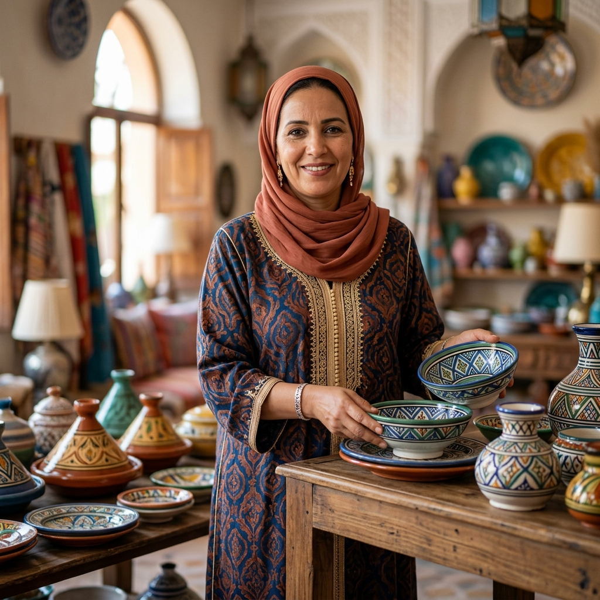
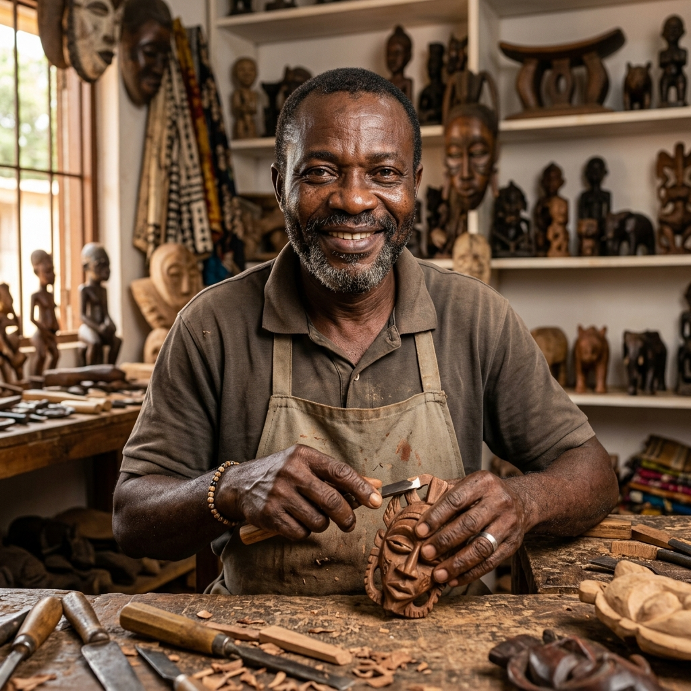
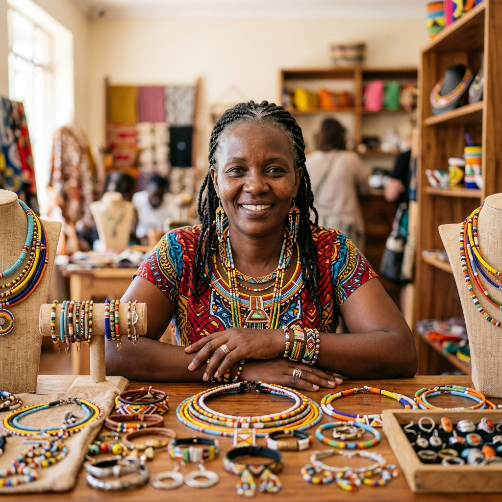
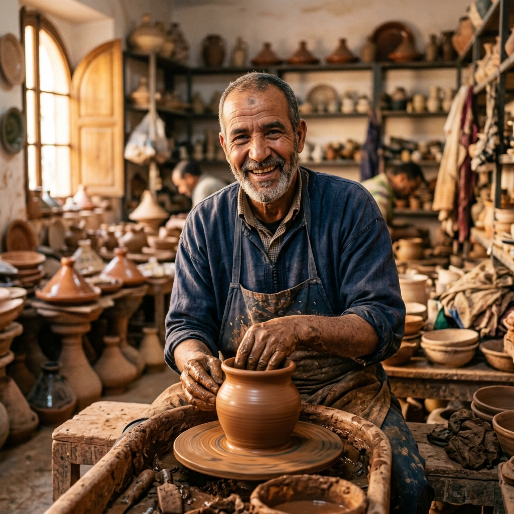
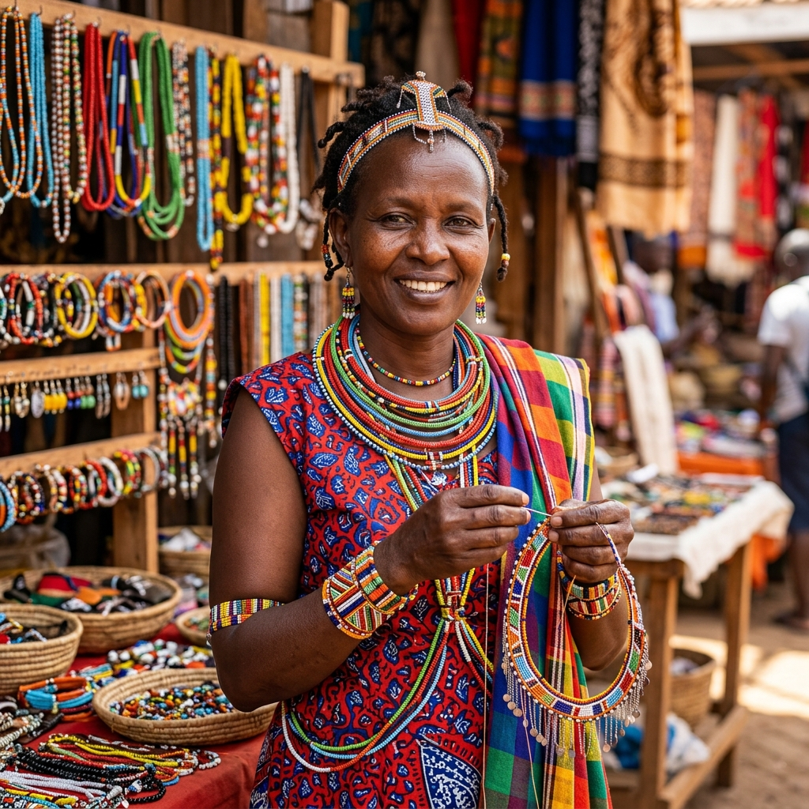

Nos Artisans, Nos Histoires
Découvrez les maîtres de la création africaine, connectez-vous à leur passion.

Sénégal
Amina Diallo
Tissage de paniers
Tisserande experte, Amina utilise des fibres naturelles locales pour créer des paniers uniques qui racontent l'histoire de sa communauté.

Ghana
Kwame Asante
Sculpture sur bois
Sculpteur renommé, Kwame insuffle une vie ancienne dans le bois, créant des masques qui relient le passé au présent.

Kenya
Nia Moyo
Joaillerie Maasai
Joaillière visionnaire, Nia fusionne techniques ancestrales et design contemporain pour des pièces d'une rare beauté.
Tous les Artisans

Babatunde Adebayo
Nigeria · Tissage traditionnel
Artiste textile maître dans l'art du tissage yoruba.

Zahara Hassan
Maroc · Céramique berbère
Céramiste passionnée alliant formes ancestrales.

Malika Faye
Sénégal · Mode et accessoires
Créatrice de mode réinterprétant les textiles africains.